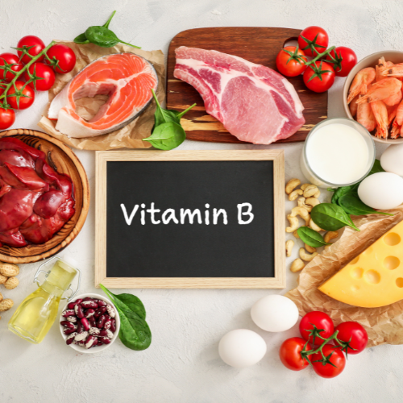
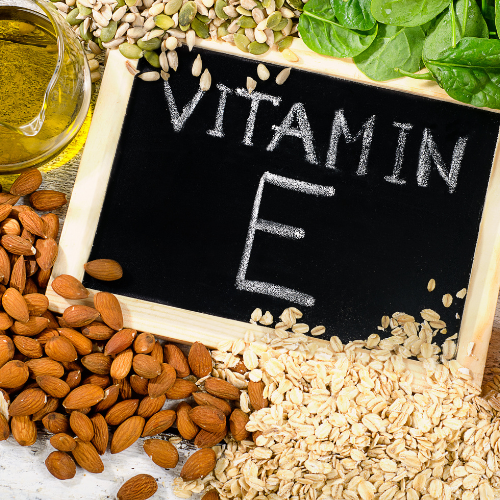
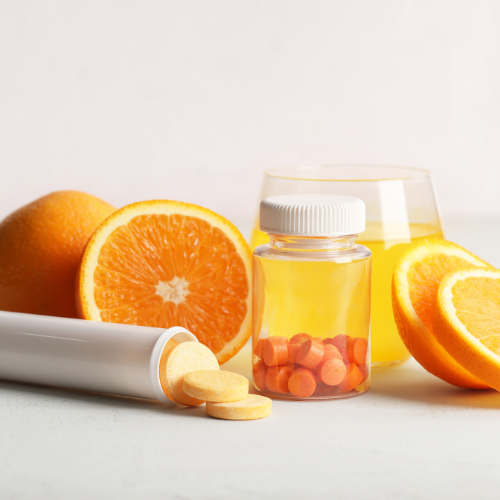

DENTAL CHEWING STICKS
For big breeds

AMSTREL DENTAL CHEW STICKS FOR DOGS are used for daily cleaning and strengthening of teeth.
Helps reduce the formation of dental tartar and plaque.
Ingredients: (corn starch, glycerin, gelatin, cellulose, calcium carbonate, caramel color, aroma flavor, fodder yeast (source of vitamins B), vitamin E (alpha tocopherol acetate), ascorbylpalmitate (source of vitamin C), potassium sorbate (aspreservative), water.
Key Ingredients and their benefits:

Vitamin B
A group of essential vitamins that support energy metabolism, helping your pet convert food into usable energy. They also promote healthy skin, a shiny coat, and proper nervous system function.

Vitamin E
A powerful antioxidant that helps protect cells from damage while supporting immune health. It also contributes to healthy skin and coat, making it especially beneficial for overall vitality.

Vitamin C
Vitamin C is an essential nutrient that plays a crucial role in maintaining overall health and well-being. It is renowned for its potent antioxidant properties, which help to protect cells from damage caused by free radicals. Additionally, Vitamin C serves as a vital cofactor for collagen synthesis, a protein that provides structure and strength to connective tissues throughout the body, including skin, bones, cartilage, and blood vessels.
Feeding Guidelines:
Recommended to feed up to 10% of the animal's daily food intake. Feed as a supplement, not a main source of food.
Not suitable for puppies younger than four months. Fresh drinking water should always be available.
Storage Conditions and Shelf Life:
36 months (from the manufacturing date) · ≤75% humidity · 14°F–86°F. Should be used within 14 days after opening.
Net Weight: 5.03 oz (150g)
Guaranteed Analysis
FOR ANIMAL USE ONLY. KEEP OUT OF REACH OF CHILDREN.
TY BY 191446436.004-2022. PRODUCT OF BELARUS.